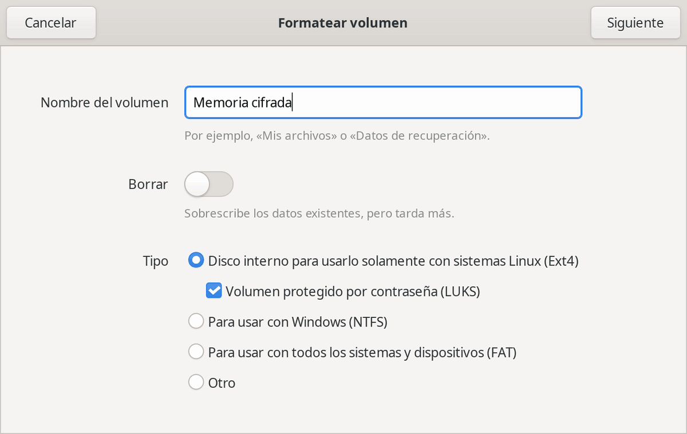

La seguridad de los datos
La seguridad de los datos que se guardan en dispositivos externos, como memorias USB, o internos, como los discos duros, dista mucho de ser buena. Probablemente pocas personas sepan que da exactamente igual lo difícil que sea la contraseña para iniciar sesión en el ordenador. Con acceso físico a él bastan 10 minutos, el tiempo de arrancarlo con alguna versión de Linux, para acceder sin límites a todo el disco duro. En el caso de las memorias externas, el proceso es todavía más sencillo.
Esta falta de seguridad afecta tanto a Windows como a Linux: si se arranca el ordenador con un sistema operativo distinto del instalado, se pueden recorrer los discos y leer todos los archivos. Poner contraseña a la BIOS tampoco es una solución segura, solo lo dificulta: en los equipos más antiguos basta con quitar la pila unos minutos para borrarla, y en cualquier equipo se puede sacar el disco duro y leerlo desde otro ordenador.
Programa grabado en la placa base que pone en marcha el ordenador antes que el sistema operativo. En los equipos actuales se llama UEFI.
¿Qué datos del ordenador pueden llegar a manos no autorizadas? Probablemente cualquier docente guarda información especialmente protegida por el Reglamento General de Protección de Datos. Por ejemplo:
- Nombres y direcciones particulares del alumnado.
- Notas académicas, medias, correcciones, etc.
- Anotaciones personales sobre el alumnado, e incluso informes médicos y psicológicos facilitados para atender a cada alumno o alumna como se merece. Los datos de salud son una categoría especialmente protegida.
- Textos escritos por el propio alumnado en los que expresa ideas o convicciones personales que no tienen por qué salir a la luz, porque pertenecen a su intimidad.
Cómo cifrar cada dispositivo
La solución a este problema es cifrar los discos. Da igual el sistema operativo instalado, las contraseñas para entrar en el ordenador o los permisos de los archivos: si el disco no está cifrado, cualquiera con acceso físico a él puede leerlo. Cifrado, en cambio, resulta ilegible sin la contraseña.
Conviene tener en cuenta dos cosas. El cifrado protege los datos cuando el equipo está apagado o bloqueado, pero no mientras la sesión está abierta, así que hay que bloquear la pantalla al dejarlo. Y si se olvida la contraseña, los datos no se pueden recuperar, por lo que es imprescindible tener copias de seguridad, como se explica en «Contraseñas y copias de seguridad».
Linux
Durante la instalación de la mayoría de las distribuciones de Linux se pregunta si se desea cifrar el disco duro, y la recomendación es hacerlo siempre. Se pedirá una contraseña que habrá que escribir cada vez que se encienda el ordenador, además de la de inicio de sesión.
También se puede cifrar cualquier memoria USB o disco externo con la aplicación Discos, eligiendo la opción «Volumen protegido por contraseña (LUKS)» al formatearlo. LUKS es el sistema de cifrado de discos estándar en Linux. Eso sí, una unidad cifrada con LUKS solo se puede abrir desde Linux.


Android
Los móviles y tabletas con Android 10 o posterior vienen cifrados de fábrica, sin que haya que hacer nada. Pero la protección depende del bloqueo de pantalla: el PIN, el patrón o la contraseña forman parte de la clave. Un móvil sin bloqueo de pantalla está cifrado, pero cualquiera que lo coja puede ver su contenido. Por eso conviene usar siempre un PIN o una contraseña, mejor que un patrón, que es más fácil de adivinar.
Los modelos más antiguos, con Android 9 o anterior, pueden no venir cifrados. En ellos la opción suele estar en los ajustes de seguridad, y el proceso puede durar horas, así que conviene hacerlo con el móvil conectado a la corriente.
Windows
Windows incluye su propio sistema de cifrado, BitLocker, desde hace años. En Windows 11 hay dos formas de usarlo:
- Cifrado de dispositivo. Está disponible también en la edición Home y se activa automáticamente al configurar el ordenador con una cuenta de Microsoft. Se puede comprobar en Configuración > Privacidad y seguridad > Cifrado del dispositivo.
- BitLocker. Está en las ediciones Pro, Enterprise y Education, tiene más opciones y permite cifrar también memorias USB y discos externos (BitLocker To Go).
En los dos casos se genera una clave de recuperación, un código de 48 cifras que permite abrir el disco si se olvida la contraseña. Windows la guarda automáticamente en la cuenta de Microsoft, lo que evita perderla, pero también significa que Microsoft puede entregarla si se lo pide un juez: en 2026 se supo que lo había hecho con tres ordenadores investigados por el FBI. Quien prefiera que la clave no salga de su poder puede guardarla en otro lugar seguro y borrarla después de su cuenta de Microsoft, como explica la ayuda de Microsoft.
Windows 10 dejó de recibir actualizaciones de seguridad el 14 de octubre de 2025, así que un equipo con Windows 10 no se puede considerar seguro aunque tenga el disco cifrado. En «Dar una segunda vida a los ordenadores» se explica cómo seguir usándolo con Linux.
iPhone, iPad y Mac
Los iPhone y los iPad se cifran automáticamente en cuanto se define un código de bloqueo. Como en Android, cuanto más largo sea el código, más difícil será acceder a los datos.
En el Mac, el cifrado del disco se llama FileVault. El asistente de configuración lo ofrece al preparar el ordenador, y si no se activó entonces, se puede hacer en Ajustes del Sistema > Privacidad y seguridad.
Memorias USB para varios sistemas
Una memoria cifrada con LUKS solo se abre en Linux, y una cifrada con BitLocker se abre con dificultad fuera de Windows. Para una memoria que se tenga que usar en ordenadores con sistemas distintos, la opción más extendida es VeraCrypt, que funciona en Linux, Windows y Mac. Crea un «volumen» cifrado, que puede ser la memoria entera o un archivo dentro de ella, y lo abre como si fuera un disco más al escribir la contraseña. Es de código abierto, aunque no es completamente software libre: conserva partes de código con la licencia del antiguo TrueCrypt, del que procede. Su web solo está en inglés.